|
Tinker-HP v1.3
|
|
Tinker-HP v1.3
|
Go to the source code of this file.
Functions/Subroutines | |
| subroutine | kewald |
| assigns particle mesh Ewald parameters and options for a periodic system More... | |
| subroutine | kewald_2 |
| initialization of PME related quantities, after (potential) initialization of comm_rec communicator More... | |
| subroutine | kewald_dd_init |
| initialization of ewald related dd quantities More... | |
| subroutine | ewaldcof (alpha, cutoff) |
| finds an Ewald coefficient such that all terms beyond the specified cutoff distance will have a value less than a specified tolerance More... | |
| subroutine | extent (rmax) |
| finds the largest interatomic distance in a system More... | |
| subroutine | moduli |
| sets the moduli of the inverse discrete Fourier transform of the B-splines More... | |
| subroutine | bspline (x, n, c) |
| calculates the coefficients for an n-th order B-spline approximation More... | |
| subroutine | dftmod (bsmod, bsarray, nfft, order) |
| computes the modulus of the discrete Fourier transform of "bsarray" and stores it in "bsmod" More... | |
| subroutine bspline | ( | real*8 | x, |
| integer | n, | ||
| real*8, dimension(*) | c | ||
| ) |
calculates the coefficients for an n-th order B-spline approximation
| no | params |
Definition at line 737 of file kewald.f90.
Referenced by moduli().
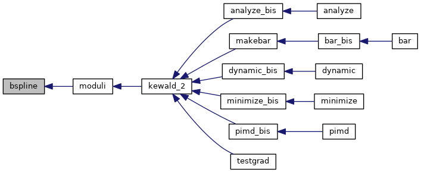
| subroutine dftmod | ( | real*8, dimension(*) | bsmod, |
| real*8, dimension(*) | bsarray, | ||
| integer | nfft, | ||
| integer | order | ||
| ) |
computes the modulus of the discrete Fourier transform of "bsarray" and stores it in "bsmod"
| [in] | bsmod,: | modulus of DFT of bsarray |
| [in] | bsarray,: | values from which the DFT of the modulus will be computed |
| [in] | nfft,: | dimension of the DFT grid |
| [in] | order,: | order of the B-spline |
Definition at line 782 of file kewald.f90.
Referenced by moduli().
| subroutine ewaldcof | ( | real*8 | alpha, |
| real*8 | cutoff | ||
| ) |
finds an Ewald coefficient such that all terms beyond the specified cutoff distance will have a value less than a specified tolerance
| [in] | alpha,: | ewald coefficient to be found |
| [in] | cutoff,: | cutoff distance |
Definition at line 592 of file kewald.f90.
References erfc().
Referenced by kewald().
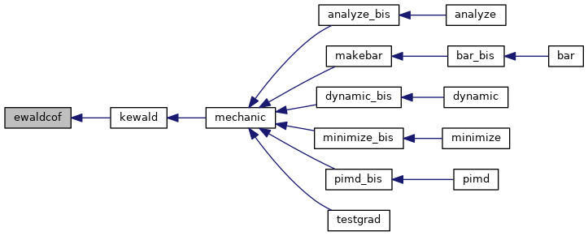
| subroutine extent | ( | real*8 | rmax | ) |
finds the largest interatomic distance in a system
| no | params |
Definition at line 651 of file kewald.f90.
Referenced by getstring(), gettext(), getword(), kewald(), and unitcell().
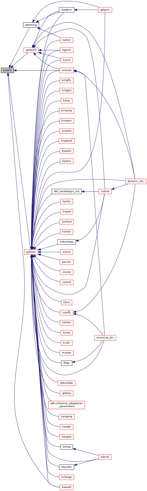
| subroutine kewald | ( | ) |
assigns particle mesh Ewald parameters and options for a periodic system
| no | params |
Definition at line 21 of file kewald.f90.
References drivermpi(), ewaldcof(), extent(), fatal(), fft_final(), gettext(), lattice(), and upcase().
Referenced by mechanic().
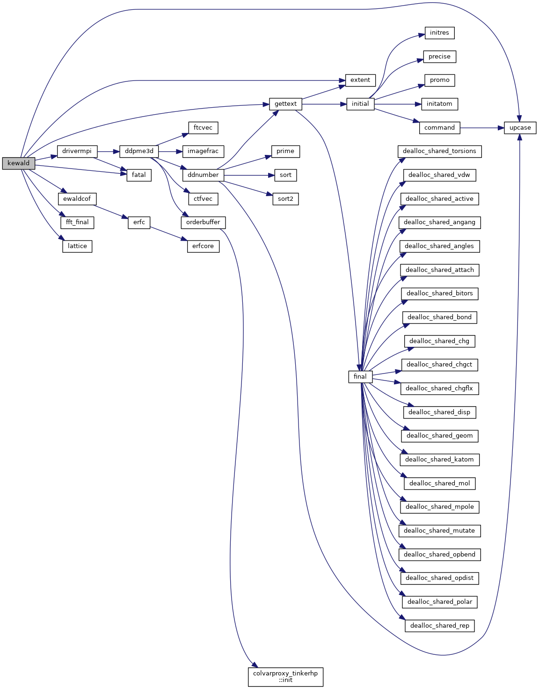
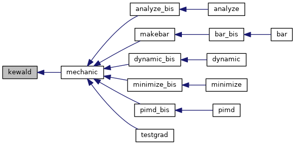
| subroutine kewald_2 | ( | ) |
initialization of PME related quantities, after (potential) initialization of comm_rec communicator
| no | params |
Definition at line 397 of file kewald.f90.
References fft_setup(), and moduli().
Referenced by analyze_bis(), dynamic_bis(), makebar(), minimize_bis(), pimd_bis(), and testgrad().
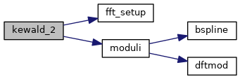
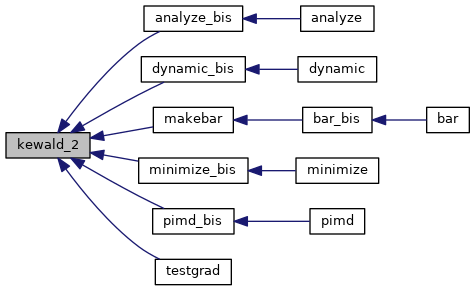
| subroutine kewald_dd_init | ( | ) |
initialization of ewald related dd quantities
| no | params |
Definition at line 562 of file kewald.f90.
References drivermpi(), and reassignpme().
Referenced by mechanic_init_para().
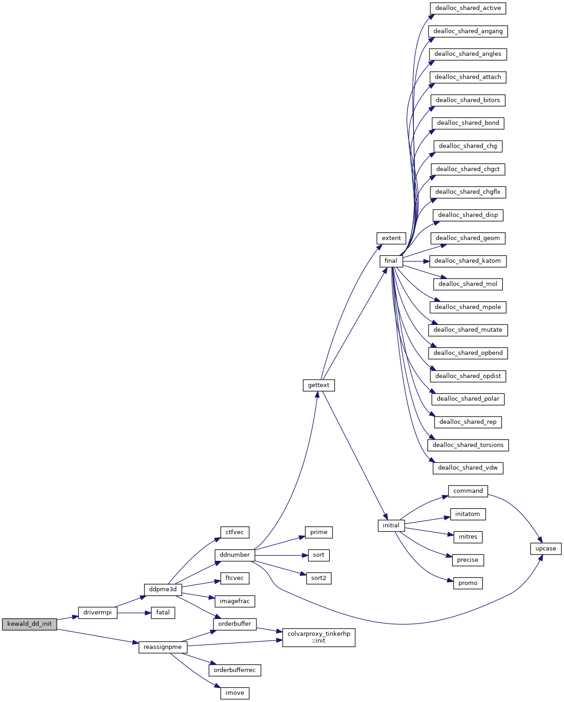
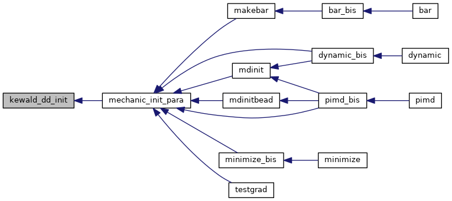
| subroutine moduli | ( | ) |
sets the moduli of the inverse discrete Fourier transform of the B-splines
| no | params |
Definition at line 696 of file kewald.f90.
References bspline(), and dftmod().
Referenced by kewald_2().
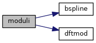
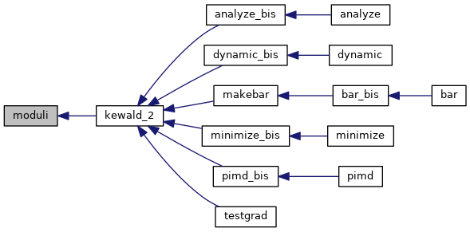
 1.8.5
1.8.5